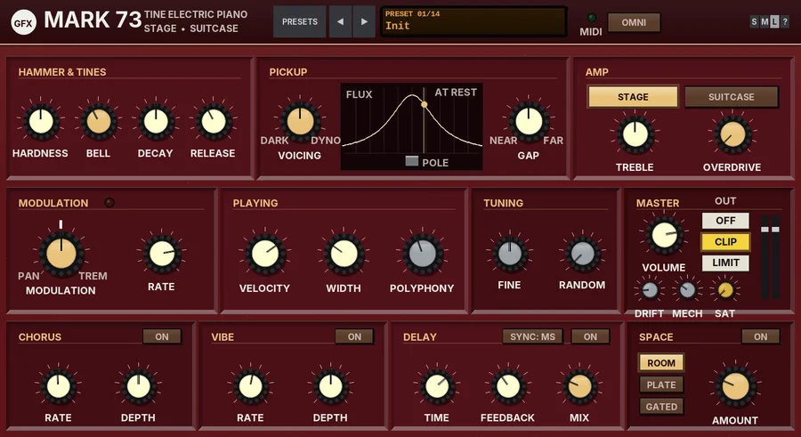

G Mark 73
A sample-free tine electric piano, modelled from the hammer up, with a stage or suitcase amp, bulb tremolo and an FX row.

Overview
G Mark 73 is a tine electric piano in the spirit of the classic 70s stage and suitcase tine pianos. There are no samples and no envelopes: every note is built from the mechanism itself. A felt-tipped hammer flies at the key velocity, squashes against the tine and bounces off. The tine rings with its own set of partials - a singing fundamental, a bright bell partial and a few short, glassy high partials that give the hammer clink - and a heavy tonebar, tuned a fraction of a hertz away, makes each note swell and ease gently as it sustains.
A magnetic pickup reads the tip of the tine as it swings. Where the tine sits across the pickup's pole (VOICING) and how close the pole is (GAP) decide the tone: round and pure, the classic bell-and-bark, or a thin, bright octave. Soft notes stay clean; slammed notes swing right past the pole and bark. As each note dies away its swing gets smaller, so the colour keeps moving all the way down.
Every key has its own small, fixed personality (a hair of tuning, its tonebar swell, its pickup alignment and balance), the dampers land with a soft felt sound, and the sustain pedal lets the undamped tines ring along with each other. The sound then goes through a STAGE or SUITCASE amp with a bulb-and-photocell tremolo or auto-pan, and on into a row of effects: CHORUS, VIBE, DELAY and SPACE. A dynamic top-end control works quietly in the background, so hard, bright or bell-heavy playing stays warm instead of clanging.
Reach for it for
- Classic tine electric piano for soul, jazz, funk and ballads
- Suitcase tremolo and wide auto-pan chords
- Barking, driven rock and gospel keys that respond to how hard you play
- Thin, bright, 80s-style "dyno" tines with chorus and delay
- Dark, round, late-night ballad pianos
Loading and playing it
- Insert a new track and add G Mark 73 to it. It is an instrument: it makes its own sound from MIDI and needs no audio input.
- Arm the track for recording, set its input to your MIDI keyboard and switch record monitoring on (or draw notes in a MIDI item).
- Play. The MIDI light in the header flashes on each note. A new instance opens at the large size on the Init preset.
- Use a sustain pedal: CC64 holds the dampers off, and the undamped tines ring along with each other a little, as on the real instrument.
- To play it from one MIDI channel only, click OMNI in the header and choose the channel.
G Mark 73 plays note on and note off with velocity, the sustain pedal (CC64) and all notes off (CC120 and CC123, which fade every note out over 25 ms rather than cutting it dead). A key struck again while it is still ringing is not a new voice: the hammer meets the moving tine, as on the real thing. There is no pitch bend: like the instrument it is modelled on, the tines have a fixed pitch, and pitch-bend messages are ignored. MIDI is not passed on down the chain.
Controls
The header
- PRESETS
- Opens the list of the 14 presets.
- ◄ / ►
- Step to the previous or next preset (wrapping round).
- Display
- Shows PRESET and its number over the preset name. Click it for the preset list too.
- MIDI
- Flashes on each note.
- OMNI / CH
- The MIDI channel. OMNI (the default) listens to every channel; click it to choose channel 1 - 16 instead.
- S / M / L
- Panel size: small, medium or large. The panel also scales to fit the plugin window.
- ?
- Opens a pop-up with the design credit, the GFX website address and the address of this manual. Click anywhere to close it.
HAMMER & TINES
- HARDNESS
- The hammer tip, 0 - 100% (50% by default). A soft tip stays on the tine longer and only excites the low partials: round and mellow. A hard tip bounces off quickly and reaches the high partials: a brighter attack, more clink and a quicker, slightly stronger bell. Above about a third, the background top-end control starts to keep the brightness in check.
- BELL
- The level of the bell partial, 0 - 100% (40% by default): the glassy chime, about seven times the pitch of the note, that rings over the start of each note. It follows your velocity on a gentle curve, so it is there on soft notes too, and it dies away faster than the fundamental, especially at the top. The designer's guideline is that around 40% is the sweet spot; turn it down for a plainer, rounder note, or up for a more bell-like one (above 70% the top-end control starts to soften it).
- DECAY
- How long held notes ring, 0 - 100% (50% by default): from about a third to nearly three times the natural decay. The decay follows the real instrument: long in the bass, short at the top.
- RELEASE
- How quickly the dampers stop a note when you let go, 0 - 100% (40% by default): from about 30 ms (a quick, dry stop) to about 1.4 s (a long, soft fade). The bass dampers are slower than the treble ones.
PICKUP
- VOICING
- The tech's voicing screw, 0 - 100% (50% by default): where the tine rests across the pickup's pole. Towards DARK the tine sits well off the pole's axis, so the pickup mostly hears its swing as a smooth slope: a round fundamental, nearly a sine, with a little low-order colour. The centre is the classic factory voicing, with the familiar balance of body, bell and bite. Towards DYNO the tine sits inline with the pole: the field is symmetrical there, so the pickup hears the swing twice per cycle and you get the octave - a shallow, bright, glassy tone. At any setting, slammed notes swing right past the pole and fold the curve over: that is the bark and growl, and it eases off as the note decays. The level is kept even, so VOICING changes the colour rather than the volume.
- GAP
- How far the pickup's pole sits from the tine, 0 - 100% (50% by default), from NEAR to FAR. Near, the field is tight compared with the swing, so notes break up into bark sooner and with less force. Far, the swing stays in the gentle part of the field: cleaner, rounder and more even across the dynamics. The level is kept roughly the same.
- Pickup window
- Shows the pickup's field across the pole (the cream curve), the pole, and where the tine rests (the amber line and dot), which moves as you turn VOICING. While a note sounds, a shaded band shows how far the latest note's tine is swinging, and its size reads SWING; with nothing playing it reads AT REST.
AMP
- STAGE / SUITCASE
- The amp. STAGE (the default) is the stage model into a clean, flat amp, with a gentle top roll-off around 10 kHz, as if recorded direct. SUITCASE is the classic suitcase set-up: a preamp that lifts the bass and treble and scoops the mids, pushed a little harder, into an open-backed cabinet with four 12-inch speakers: a low thump around 100 Hz, a mid bump and a roll-off from about 5 kHz. The switch is made under a brief fade, so it never clicks.
- TREBLE
- A treble shelf around 3 kHz after the amp, -12 to +12 dB (0 dB by default).
- OVERDRIVE
- How hard the amp's valves and transistors are driven, 0 - 100% (0% by default). A little warms and thickens the sound; more gives the classic broken-up, growling electric piano. The amp's bias makes the drive add even harmonics, and the drive adds some level, like a real amp.
MODULATION
- MODULATION
- One knob, two effects, -100 to +100% (off at 12 o'clock, marked by a tick). Turn it right for tremolo (TREM: the level pulses) or left for stereo auto-pan (PAN: the sound swings between the speakers). It is driven, as on the original amps, by little bulbs and photocells: the filament heats faster than it cools, so the pulse is smooth and rounded rather than a clean sine. The red light above it glows with the bulb.
- RATE
- The speed of the tremolo or auto-pan, 0.1 - 12 Hz (4.5 Hz by default).
PLAYING
- VELOCITY
- How much your key velocity changes the hammer speed, 0 - 100% (70% by default). At 0% every note is struck at the same speed; low settings give a light curve; 100% is a long hammer throw, with the widest range from a soft touch to a slammed, barking note. The tone changes with the speed, not only the level.
- WIDTH
- Spreads the keys across the stereo field, low notes to the left and high notes to the right, 0 - 100% (30% by default). 0% is mono.
- POLYPHONY
- How many notes can sound at once, 4 - 32 (16 by default). When they are all in use, the oldest note (released ones first) is faded out quickly to make room. Fewer voices use less CPU.
TUNING
- FINE
- Fine tuning, -50 to +50 cents.
- RANDOM
- A small random tuning offset on every new note, 0 - 10 cents (0 by default): from a freshly tuned instrument to a tired, out-of-tune one. (A double-click resets it to 0.5 cents rather than 0.)
MASTER
- VOLUME
- The output level, -24 to +6 dB. A soft knee on the bus above -6 dBFS keeps the peaks under -1 dBFS before the output stage.
- DRIFT
- How much the instrument drifts, 0 - 100% (15% by default; a double-click resets it to 25%). See Drift below.
- MECH
- The mechanism noises, 0 - 100% (30% by default; a double-click resets it to 35%): the hammer thump on the key bed and its click, the clink of the short high partials on hard hits, the soft felt sound of the dampers landing and the knock as a key comes up. At 0 you hear only the tines.
- SAT
- Band saturation on the way out, 0 - 100% (0% by default): only the lows and highs are saturated (the mids stay clean), with a soft curve that loosens as the level rises.
- OFF / CLIP / LIMIT (OUT)
- The final stage: nothing, a soft clipper that holds the peaks at -0.3 dBFS (no latency, the default), or a lookahead limiter that holds them at -0.3 dBFS (3 ms latency, compensated by REAPER). The CLIP key flashes red while the clipper is working.
- Meters
- Output level, left and right.
CHORUS, VIBE, DELAY and SPACE
The FX row, after the amp and in that order. Each effect has its own lit ON key and fades in and out smoothly; all four are off on Init.
- CHORUS: RATE / DEPTH
- A stereo bucket-brigade-style chorus, the left and right sweeps a quarter cycle apart. RATE 0.05 - 8 Hz (0.6 Hz by default), DEPTH 0 - 100% (50% by default).
- VIBE: RATE / DEPTH
- A four-stage photocell phaser, its lamp sweeping the notches: the swirl of the classic lamp-driven pedals. RATE 0.1 - 10 Hz (1.2 Hz by default), DEPTH 0 - 100% (50% by default); DEPTH sets both how wide the sweep is and how much of it you hear.
- DELAY: TIME / FEEDBACK / MIX
- A ping-pong delay: the echoes start on the left and bounce across. The feedback is warm and saturating, losing top and bottom on each repeat. TIME 20 - 1500 ms (375 ms by default), FEEDBACK 0 - 95% (35%), MIX 0 - 100% (25%).
- SYNC
- Click to step through SYNC: MS (TIME in milliseconds), 1/4, 1/8 DOT (dotted), 1/8 and 1/4 TRIP (triplet). The note values follow the project tempo, up to 1.5 s; while synced, the TIME knob is greyed and shows the synced time.
- SPACE: ROOM / PLATE / GATED
- The reverb type. ROOM: a room of about 0.5 - 1.3 s. PLATE: bright and long, about 1.4 - 4 s. GATED: the 80s gated reverb, a long, bright tail cut short about 0.3 s after each note.
- AMOUNT
- The amount of reverb, 0 - 100% (25% by default). For ROOM and PLATE it also lengthens the tail.
Drift
DRIFT is the GFX instrument drift, kept gentle here because a tine piano holds its tuning well. The tuning wanders slowly, well under a cent at the default 15% and only a few cents even at 100%; every note lands a fraction of a cent off; the pickup coil's top end and the tines' alignment over the pole breathe a little; and the tremolo rate wavers. At 0% the instrument stays exactly where you set it.
In REAPER's parameter list only
- Bias / Sat low band / Sat high band / Ceiling
- The rest of the output stage: the saturation's even-harmonic bias, where its low and high bands start (40 - 400 Hz and 2 - 16 kHz) and the clip ceiling or limiter threshold (-0.3 dB by default).
Knobs: drag up or down (Shift for fine moves); double-click or Ctrl-click to reset a knob to its default.
Presets
A preset sets every sound control, the FX row, DRIFT and VOLUME. SAT, the output stage and the MIDI channel are left as they are.
- Init
- Every control at its default: the factory voicing through the STAGE amp, no modulation and no effects.
- Stage Mark
- The classic stage piano: a slightly softer hammer, a touch off-axis, a longer decay and a small room.
- Bright Stage
- A harder hammer, the pole a little nearer, +4 dB of treble, a hint of drive and light chorus: cuts through a band.
- Mellow Ballad
- A soft hammer, dark voicing, long decay and release, the top rolled off, with chorus and a plate.
- Suitcase Tremolo
- The SUITCASE amp with tremolo at 4.8 Hz, a darker voicing and a small room.
- Auto Pan Wide
- The SUITCASE amp with deep auto-pan at 3.2 Hz; the keys are left centred so the pan does the moving.
- Bark & Bite
- A hard hammer, the pole near and the voicing a little towards DYNO, a wide velocity range, some drive and the vibe: hard notes growl.
- Bell Tines
- A very hard hammer with the tine off-axis and +4 dB of treble: glassy, chiming tops over a round body, with chorus and a plate.
- Soft Felt
- The softest hammer, dark voicing, the pole far away and the top rolled off, with a little more bell: round and quiet.
- Drive Amp
- The SUITCASE amp driven hard, with tremolo and a short delay: a piano through a cranked amp.
- Gospel Bark
- The SUITCASE amp with some drive, a near pole and a wide velocity range for bark, quick tremolo and a room.
- Lo-Fi Upright
- Short, dark and narrow through the SUITCASE amp, with tremolo, more random detune, lots of drift and more mechanism noise.
- Dyno Bright
- VOICING right over to DYNO: the thin, bright octave tone with chorus, a dotted-eighth delay and a plate.
- Dark Ballad
- VOICING right over to DARK, a soft hammer, the pole far away, a little less bell and the SUITCASE amp: deep and warm.
Tips
- Play with dynamics: with VELOCITY high, the tone changes as much as the level, from round and clean to barking.
- VOICING is the biggest single change to the character: try it first, before reaching for TREBLE.
- If the bark comes in too early, move GAP towards FAR; if you want it with less effort, move it towards NEAR.
- Keep BELL around 40% and use HARDNESS to make the attack brighter or softer; push BELL only when you want a chime.
- For the classic suitcase sound, choose SUITCASE and set MODULATION to about +50% with RATE between 4 and 6 Hz.
- Turn MECH down for a polished, studio-clean piano, or up for the close-miked sound of the keys and dampers.
File: gfx-g-mark-73.jsfx